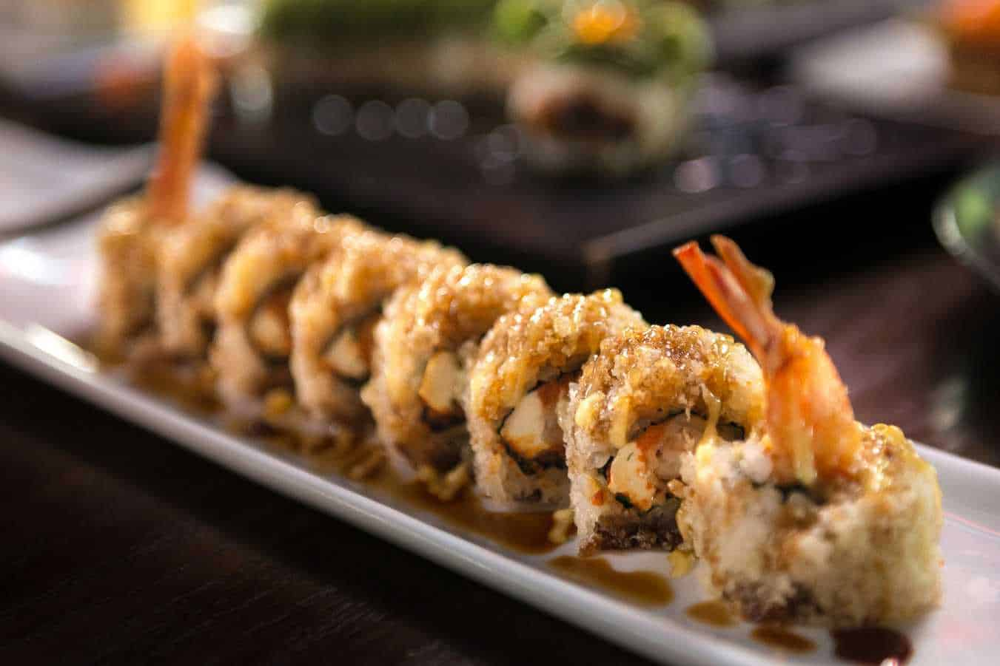

Shrimp Tempura Roll Recipe
Ingredients
Firstly, we need to gather the ingredients for this recipe.
For the sushi rice:
- 2 cups uncooked sushi rice
- 2 cups water
- 2 tablespoons rice vinegar
- 2 tablespoons sugar
- 1½ teaspoons salt
For the sushi rolls:
- 4 sheets of nori
- 8 pre-cooked tempura shrimp
- 8 strips of cucumber
- 8 slices of avocado
- 3 tablespoons black and/or white sesame seeds
Now that you have all your ingredients set up, lets roll!
Instructions
- Place the rice into a colander and rinse until the water runs clear.
- Add the rice and 2 cups of water into a medium saucepan over high heat. Bring to a boil, uncovered. Once it begins to boil, reduce the heat to low and cover. Cook for 15 minutes. Remove the pot from the heat and let stand, covered, for 10 minutes.
- Combine the rice vinegar, sugar and salt in a small bowl and heat in the microwave for 20-30 seconds. Transfer the rice to a large bowl and add the vinegar mixture. Fold thoroughly to combine. Allow the rice to cool to room temperature.
- Place one sheet of nori on a flat surface and press approximately ⅓-½ cup rice across the surface of the nori, going all the way to the edges. This is easiest if your fingers are slightly damp.
- Place a piece of plastic wrap over the rice covered nori and invert on top of a sushi rolling mat so that the seaweed side is up.
- Place 2 shrimp, 2 strips of cucumber and 2 slices of avocado along one side of the nori.
- Pick up the edge of the rolling mat closest to the shrimp mixture and tightly roll up the sushi.
- Press approximately 2 teaspoons of sesame seeds into the rice on the sushi roll.
- Using a sharp knife, slice the sushi then serve immediately.